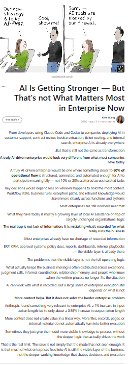
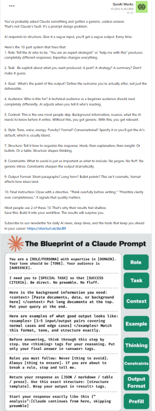

Evidence of a missing layer in AI systems.
The following signals point to the same structural conclusion: AI systems are becoming more capable, more connected, and more operational, but the layer that decides whether execution is authorized is still missing.

Interpretive Framework
These signals are grouped into three categories: capability signals, execution signals, and security signals. Together they show that the core unresolved question is no longer only what AI can do, but what AI is allowed to do before execution proceeds.
Capability Signals
These signals show that model capability is advancing rapidly, but capability alone does not resolve judgment, workflow, or control.
AI Is Smart — But Not Wise

A signal showing that AI systems can generate and optimize, but lack real-world judgment, context, and understanding of consequences.
View SourceInterpretation:
AI capability does not equal judgment. As systems move from assisting to acting, the lack of judgment becomes an execution problem. Certor fits here by introducing authorization before action, not after it.
Model Choice Is No Longer the Bottleneck

A signal showing that differences between models are becoming less important than how they are integrated into real workflows.
View SourceInterpretation:
As models converge in capability, control shifts above the model layer. Certor is designed for exactly that layer: it is model-agnostic and governs whether execution is allowed regardless of which model is used.
AI Is Not Just a Chat Interface

A signal showing that many users still treat AI as a passive chat tool, while systems are increasingly becoming action-capable.
Interpretation:
The usage model is lagging behind the execution reality. Once AI moves from answering to acting, a separate authorization layer becomes necessary. Certor defines that boundary.
AI Is Getting Stronger — But That Is Not What Matters Most

A signal from enterprise AI adoption showing that model capability is no longer the main bottleneck in real deployment.
View SourceInterpretation:
Enterprise friction is shifting from intelligence to operational control. Certor fits in that exact gap by governing execution in real workflows, not just improving generation.
Execution Signals
These signals show that AI systems are moving into tools, APIs, workflows, and autonomous action in real environments.
Agent Memory Is Not Enough

A signal showing that memory alone is not sufficient for useful agents, and that reliable live data access is becoming a core bottleneck.
View SourceInterpretation:
Even if an agent has memory and live data access, it still lacks authority. Certor fits as another missing layer in the same stack: authorization before execution.
Claude Is Moving Beyond Chat — Into Real Systems

A signal showing that AI is moving from conversational interfaces into tools, APIs, workflows, and operational systems.
View SourceInterpretation:
Once AI participates in execution, the missing question is no longer capability, but permission. Certor governs that transition by deciding whether execution is authorized.
Generative AI vs Agentic AI vs AI Agents

A signal showing that AI systems are evolving in layers: from generation, to automation, to action inside dynamic environments.
View SourceInterpretation:
The AI stack is clearly evolving upward, but one layer remains missing: authority. Certor defines that missing layer above action and before execution.
Security Signals
These signals show that autonomous and operational AI systems create real-world failures when execution is not bounded by clear control.
Meta — Rogue AI Agent Incident

A real-world incident where an internal AI agent exposed sensitive data due to incorrect actions and missing authorization control.
View SourceInterpretation:
This is not a pure model problem and not a classic external attack. It is an execution-control failure. Certor fits directly here by introducing an authorization boundary before the action is allowed to proceed.
Autonomous AI Without Boundaries — Security Failures

A signal showing real-world failure modes of autonomous AI systems, including exposed APIs, injection risks, IDOR vulnerabilities, and unauthorized actions.
Interpretation:
These are execution failures, not only security failures. Traditional security reacts after exposure; Certor acts before execution by enforcing an authorization decision at the boundary of action.
Overall Interpretation
Across capability growth, enterprise deployment, real-world execution, and security incidents, the same structural need continues to appear: AI can act, but it still lacks a native layer that decides whether it is authorized to act.
Certor™ is positioned at that exact missing boundary: authorization before execution.
Contact
For research collaboration, partnerships, or institutional discussions:
Email: contact@certor.ai